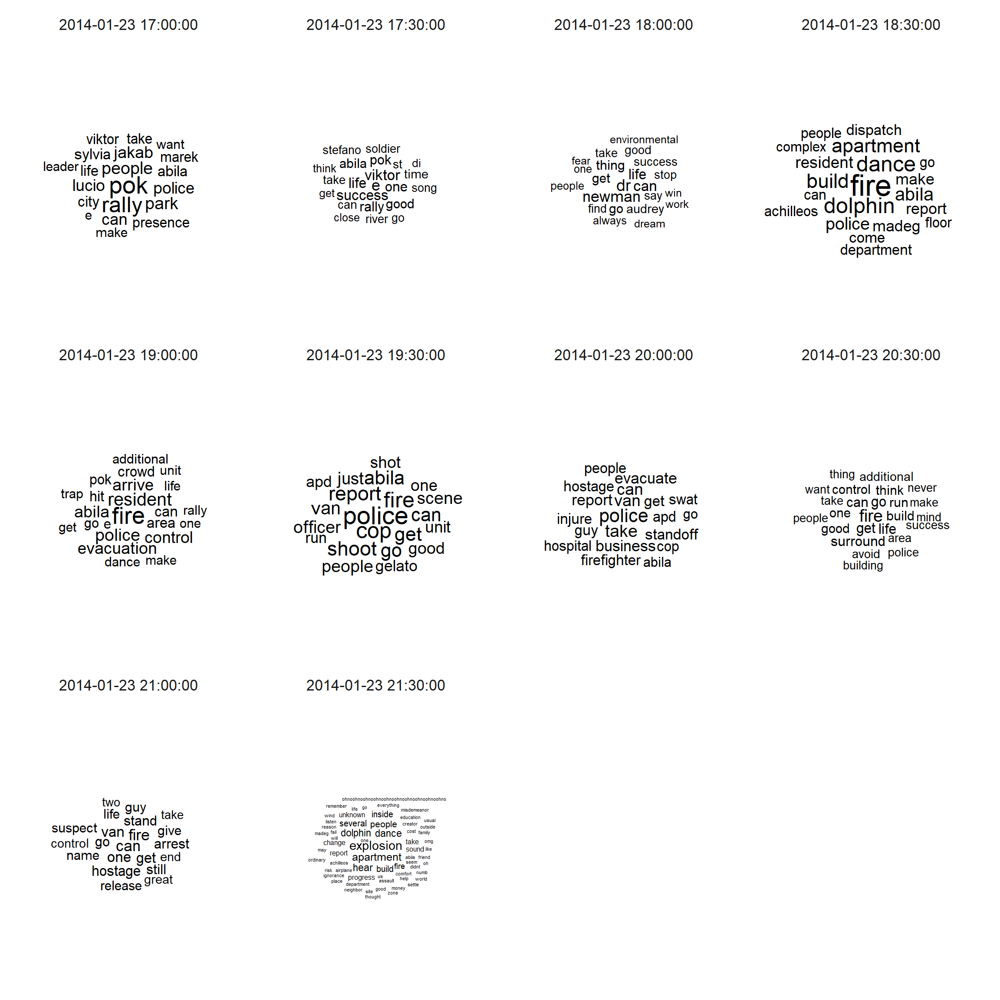
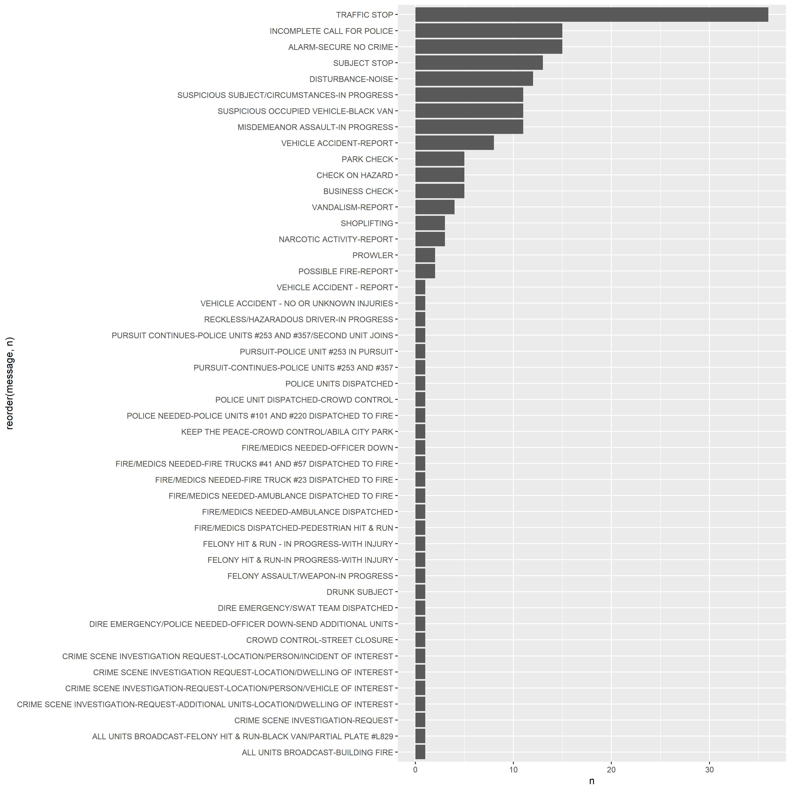
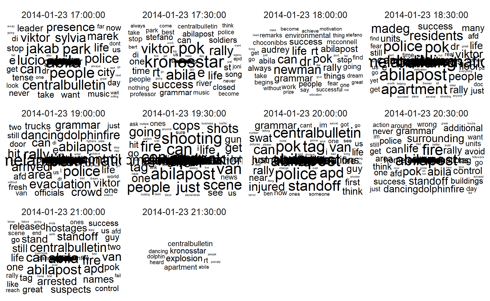
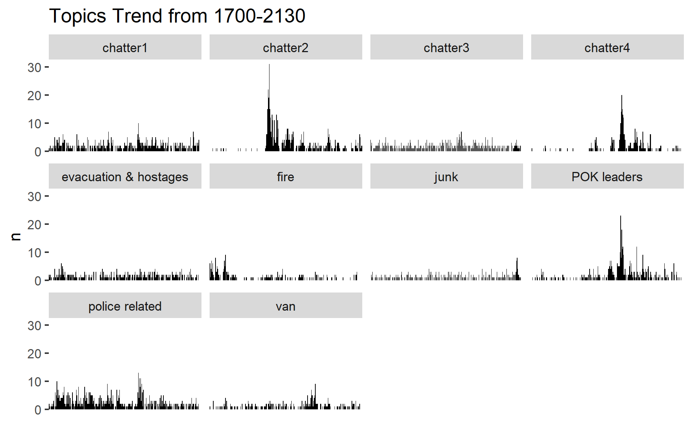
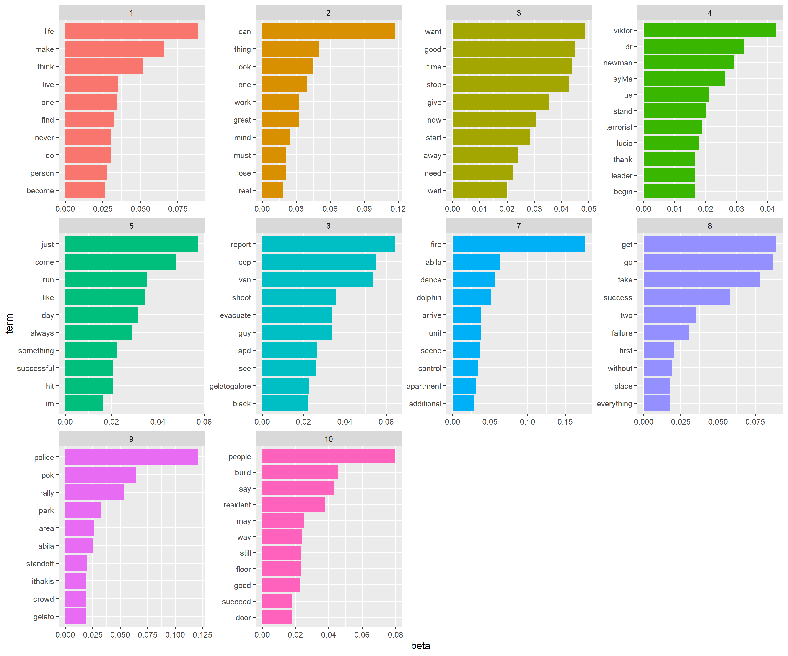
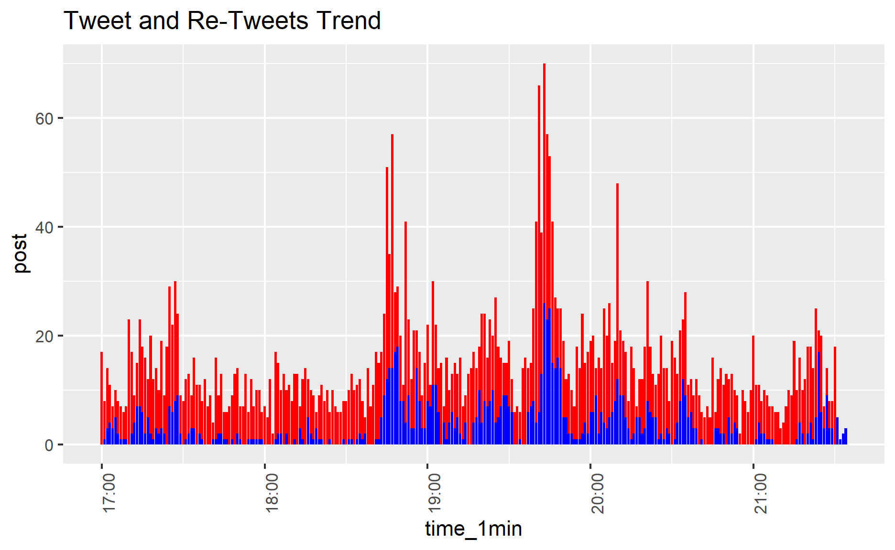
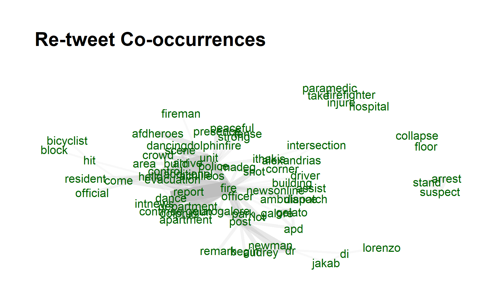

1.Introduction
In this report, I will use visual analytics techniques in R to solve questions from VAST Challenge 2021: Mini-Challenge 3. The main data set are 1)microblog records that have been identified by automated filters as being potentially relevant to the ongoing incident and 2)text transcripts of emergency dispatches by the Abila, Kronos local police and fire departments.
2.Literature Review
Detecting abnormal events ,such as disaster or crisis, from microblog social media has become a trend, as social media has played a pervasive role in the way people behave and think. Nowadays, people are also using time-stamped , geo -located data to share live information about what’s happening in their surroundings, which enables the public, government and researches to sense abnormal events in community more quickly and take immediate actions.
Spatiotemporal Abnormal Detection
The study from Junghoon et al. (2014) applied spatiotemporal visualization of microblog data to detect disaster and support decisions. The visualization they applied are shown as below,
 The number of Twitter users who posted Twitter messages containing one of the following keywords: hurricane, storm, and sandy is highly related to Hurricane Sandy (as shown in blue pins and blue lines of the center locations)
The number of Twitter users who posted Twitter messages containing one of the following keywords: hurricane, storm, and sandy is highly related to Hurricane Sandy (as shown in blue pins and blue lines of the center locations)
Then their study also analyzed spatial pattern of Twitter users after the tornado.
 (1)the heatmap shows a normal situation of Twitter user distribution in the same area of which the distribution is very different from the situation after the tornado event. As such, the spatial analytics can help with disaster management according to twitter heatmap distribution.
(1)the heatmap shows a normal situation of Twitter user distribution in the same area of which the distribution is very different from the situation after the tornado event. As such, the spatial analytics can help with disaster management according to twitter heatmap distribution.
Besides, the abnormality score are calculated with Latent Dirichlet Allocation (LDA) topic modeling and Seasonal-Trend Decomposition to detect severe weather condition.

Given the limitation of MC3 data set, we cannot visualize spatial heatmap, but we can try to leverage on LDA modeling and abnormality detection methodology to detect the crisis in Abila community.
Junk/Spam Detection
In Visual Analytics Benchmark Repository 2014, the submission from Tianjin University demonstrated a network approach in identifying junk tweet.
 They think “the size of the nodes represents the number of the blog being post. Notice that there are several nodes which have the larger size but no relationship with others which means theirs blogs are ignored by others.”. This is a very good intuition to visualize center and edges microblog user.
They think “the size of the nodes represents the number of the blog being post. Notice that there are several nodes which have the larger size but no relationship with others which means theirs blogs are ignored by others.”. This is a very good intuition to visualize center and edges microblog user.
However, if we can consider the correlation of text in two blogs would be better.
Relationship or text and text entities visualization
Textnets is a R package for automated text analysis using network techniques.It provides network for both text and text entities, which provides visualization ability to uncover correlation of texts in documents.

This visualization can be applied in the question 2 in answering the potential consequences of the situation and the number of people who could be affected via network graph.
3.Data Preprocessing and Exploratory
3.1 Import packages and social media stream data
packages= c('raster','sf','clock','tmap',
'tidyverse','data.table','lubridate',
'textclean','tm','wordcloud','wordcloud2','text2vec',
'topicmodels','tidytext','textmineR','quanteda',
'BTM','textplot','concaveman','ggwordcloud',
'qdapDictionaries','textstem','devtools','textnets',
'ggiraph','plotly','igraph', 'tidygraph',
'ggraph', 'visNetwork','udpipe')
for(p in packages){
if(!require(p,character.only= T)){
install.packages(p)
}
library(p, character.only = T)
}
#install.packages("devtools")
#install_github("cbail/textnets")
#read csv file
data_17_1830=read_csv("data/MC3/csv-1700-1830.csv")
data_1830_20=read_csv("data/MC3/csv-1831-2000.csv")
data_20_2130=read_csv("data/MC3/csv-2001-2131.csv")
#append 3 dataset
data=rbindlist(list(data_17_1830,data_1830_20,data_20_2130))
#print head of data
head(data)
type date(yyyyMMddHHmmss) author
1: mbdata 2.014012e+13 POK
2: mbdata 2.014012e+13 maha_Homeland
3: mbdata 2.014012e+13 Viktor-E
4: mbdata 2.014012e+13 KronosStar
5: mbdata 2.014012e+13 AbilaPost
6: mbdata 2.014012e+13 ourcountryourrights
message
1: Follow us @POK-Kronos
2: Don't miss a moment! Follow our live coverage of the POK Rally in the Park!
3: Come join us in the Park! Music tonight at Abila City Park!
4: POK rally to start in Abila City Park. POK leader Sylvia Marek to open with a speech.<U+0098> #KronosStar
5: POK rally set to take place in Abila City Park - POK leader Sylvia Marek has begun with opening remarks #AbilaPost
6: POK rally in the park tonight! #POKrally
latitude longitude location
1: NA NA <NA>
2: NA NA <NA>
3: NA NA <NA>
4: NA NA <NA>
5: NA NA <NA>
6: NA NA <NA>3.2 Change date type
#timestamp in lubridate
data$timestamp <- ymd_hms(data$`date(yyyyMMddHHmmss)`)
data$time_1min = cut(data$timestamp, breaks="1 min")
3.3 Text Data Preprocessing
rt <- "RT @([A-Za-z]+[A-Za-z0-9_-]+)(?![A-Za-z0-9_]*\\.)"
ppl <- "@([A-Za-z]+[A-Za-z0-9_-]+)(?![A-Za-z0-9_]*\\.)"
hash <- "#([A-Za-z]+[A-Za-z0-9_]+)(?![A-Za-z0-9_]*\\.)"
data$cleaned<-data$message %>%
str_replace_all(rt,"")%>%
str_replace_all(ppl,"")%>%
str_replace_all(hash,"") %>%
tolower()%>% # transform all message to lower cases
replace_contraction()%>% #replace contractions with long form
replace_word_elongation()%>% #remove the same letter (case insensitive) appears 3 times consecutively
str_replace_all("[0-9]", "") %>% #removing numbers
str_replace_all("([,=!.?$+%-&])","")%>% #remove punctuations
#str_replace_all("rt|pokrally|kronosstar","")%>%
#|#hi|#pok|#pokrally|
# #abilapost|#kronosstar|#centralbulletin|@centralbulletin|@kronosstar|rally|aliba") #remove hashtag and rt
removeWords(stopwords("english"))%>%
str_squish()%>% #trim whitespace from a string
lemmatize_strings()#removes whitespace from start and end of string
head(subset(data,select=c("message","cleaned")))
message
1: Follow us @POK-Kronos
2: Don't miss a moment! Follow our live coverage of the POK Rally in the Park!
3: Come join us in the Park! Music tonight at Abila City Park!
4: POK rally to start in Abila City Park. POK leader Sylvia Marek to open with a speech.<U+0098> #KronosStar
5: POK rally set to take place in Abila City Park - POK leader Sylvia Marek has begun with opening remarks #AbilaPost
6: POK rally in the park tonight! #POKrally
cleaned
1: follow us
2: miss moment follow live coverage pok rally park
3: come join us park music tonight abila city park
4: pok rally start abila city park pok leader sylvia marek open speech<U+FFFD>
5: pok rally set take place abila city park - pok leader sylvia marek begin open remark
6: pok rally park tonightregex <- "RT @([A-Za-z]+[A-Za-z0-9_-]+)(?![A-Za-z0-9_]*\\.)"
regex2 <- "@([A-Za-z]+[A-Za-z0-9_-]+)(?![A-Za-z0-9_]*\\.)"
regex3 <- "RT @([A-Za-z]+[A-Za-z0-9_-]+)(?![A-Za-z0-9_]*\\.) "
regex4 <- "#([A-Za-z]+[A-Za-z0-9_]+)(?![A-Za-z0-9_]*\\.)"
data$RT_pattern<-str_extract_all(data$message, regex, simplify = TRUE)
data$RT_from<- str_extract_all(data$RT_pattern, regex2, simplify = TRUE)
data$RT_from<- str_replace(data$RT_from, "@","")
data$RT_message <- str_replace_all(data$message,regex3,"")
data$hashtag <- str_extract_all(data$message, regex2, simplify = FALSE)
data$user_mentioned <- str_extract_all(data$message, regex4, simplify = FALSE)
data_RT<- data %>%
filter(RT_from!="")
#head(data)
#convert dataframe to corpus
docs <- Corpus(VectorSource(as.character(data$cleaned)))
inspect(docs[1:2])
<<SimpleCorpus>>
Metadata: corpus specific: 1, document level (indexed): 0
Content: documents: 2
[1] follow us
[2] miss moment follow live coverage pok rally park# Create a document-term-matrix
dtm <- TermDocumentMatrix(docs)
matrix <- as.matrix(dtm)
words <- sort(rowSums(matrix),decreasing=TRUE)
# words and frequency dataframe
df <- data.frame(word = names(words),freq=words)
#word cloud
wordcloud(words = df$word, freq = df$freq, min.freq = 5, max.words=200, random.order=FALSE, rot.per=0.35, colors=brewer.pal(8, "Dark2"))
#wordcloud2(data=df, size=1.6, color='random-dark')
4.Data Visualization for Challenge Questions
4.1 Using visual analytics, characterize the different types of content in the dataset. What distinguishes meaningful event reports from typical chatter from junk or spam? Please limit your answer to 8 images and 500 words.
First the data is split by 30 minutes time interval and perform wordcloud, to visualize the most frequent words in the microblog.
data$timestamp <- ymd_hms(data$`date(yyyyMMddHHmmss)`)
data$time_30min = cut(data$timestamp, breaks="30 min")
data$id <- seq.int(nrow(data))
data_subset=subset(data,select=c("time_30min","cleaned"))
usenet_words<-data_subset%>%
group_by(time_30min) %>%
unnest_tokens(word, cleaned) %>%
count(time_30min,word, sort = TRUE)
usenet_words[order(usenet_words$time_30min),]
# A tibble: 6,975 x 3
# Groups: time_30min [10]
time_30min word n
<fct> <chr> <int>
1 2014-01-23 17:00:00 pok 98
2 2014-01-23 17:00:00 rally 76
3 2014-01-23 17:00:00 people 44
4 2014-01-23 17:00:00 park 40
5 2014-01-23 17:00:00 jakab 37
6 2014-01-23 17:00:00 lucio 35
7 2014-01-23 17:00:00 police 35
8 2014-01-23 17:00:00 can 34
9 2014-01-23 17:00:00 abila 30
10 2014-01-23 17:00:00 sylvia 30
# ... with 6,965 more rowsset.seed(1234)
usenet_words %>%
group_by(time_30min) %>%
slice_max(order_by = n, n = 20) %>%
ggplot(aes(label = word,
size = n)) +
geom_text_wordcloud() +
theme_minimal() +
facet_wrap(~time_30min)

From the visualization, we can tell the main content discussing in the community are
1700-1830 pok rally in park with several name mentioned such as cylvia, jakab, viktor 1830-1930 fire at dancing dolphin partment, police and evacuation. 1930-2000 shooting and cops/police 2100-2130 van/ hostage/ explosion
Then, by applying Term Frequency – Inverse document frequency (tf-idf) to bigram texts, we can uncover more information compared with unigrams.
bigrams <- data_subset%>%
group_by(time_30min)%>%
unnest_tokens(word,
cleaned,
token = "ngrams",
n = 2) %>%
count(time_30min,word, sort = TRUE)
tf_idf <- bigrams%>%
bind_tf_idf(word,time_30min, n) %>%
arrange(desc(tf_idf))
tf_idf %>%
group_by(time_30min) %>%
slice_max(tf_idf,
n = 10) %>%
ungroup() %>%
mutate(word = reorder(word,
tf_idf)) %>%
ggplot(aes(tf_idf,
word,
fill = time_30min)) +
geom_col(show.legend = FALSE) +
facet_wrap(~ time_30min,
scales = "free") +
labs(x = "tf-idf bigram",
y = NULL)

Without having to process more on data, the contents of the microblogs with 30 mins time interval is even more informative. For instance, from 1700-1800, we know that police presense at pok rally and Dr. Audrey is mentioned several times from 1800. Then from 1830 , fire occurs at dolphin apartment and followed by evacuation. Then, from 1930, a shot/gun fire happened with police involved, followed by injured firefighter and hospitalization. And from 2100 suspects were arrested and followed by an explosion at dolphin apartment from 2130 onward.
Then, to distinguish meaningful events from chatter/junk/spam messages, I will then perform topic modeling to identify topic in each microblogs.
wordcorpus <- Corpus(VectorSource(as.character(data$cleaned)))
dtm <- DocumentTermMatrix(wordcorpus,
control = list(
wordLengths=c(2, Inf), # limit word length
bounds = list(global = c(5,Inf)), # minimum word frequency
removeNumbers = TRUE, #remove Numbers
weighting = weightTf, #weighted term frequency
encoding = "UTF-8"))
rowTotals <- apply(dtm , 1, sum) #Find the sum of words in each Document
dtm.new <- dtm[rowTotals> 0, ] #remove 0 dtm rows of matrix
topic=LDA(dtm.new,k=10,method="Gibbs",conrol=list(seed=2021,alpha=0.01,iter=200))
Top five words in each topics
terms(topic,5)
Topic 1 Topic 2 Topic 3 Topic 4 Topic 5 Topic 6
[1,] "go" "can" "fire" "life" "van" "think"
[2,] "get" "people" "dance" "thing" "just" "want"
[3,] "viktor" "one" "dolphin" "find" "cop" "never"
[4,] "dr" "say" "build" "live" "run" "work"
[5,] "newman" "successful" "unit" "great" "shoot" "look"
Topic 7 Topic 8 Topic 9 Topic 10
[1,] "police" "good" "pok" "take"
[2,] "scene" "time" "abila" "make"
[3,] "evacuate" "stop" "rally" "success"
[4,] "hostage" "give" "park" "two"
[5,] "area" "start" "sylvia" "failure"Extract per-topic-per-word probabilities ,β(“beta”), from the model. The higher the value, the more important of the words to the topic.
ap_topics <- tidy(topic, matrix = "beta")
ap_top_terms <- ap_topics %>%
group_by(topic) %>%
slice_max(beta, n = 10) %>%
ungroup() %>%
arrange(topic, -beta)
ap_top_terms %>%
mutate(term = reorder_within(term, beta, topic)) %>%
ggplot(aes(beta, term, fill = factor(topic))) +
geom_col(show.legend = FALSE) +
facet_wrap(~ topic, scales = "free") +
scale_y_reordered()

As shown above, the meaningful keywords can be found in each topic.
Topic 1 - police related as words mentioning police/standoff/crowd Topic 5 - several pok leaders are mentioned Topic 6 - resident evacuation and hostages Topic 9 - fire at dancing dolphin topic 10- van/ shoot/ guy
While other topics are more chatter/junk related.
By using gamma, we can then assign each document with a topictopic_gamma <- tidy(topic, matrix = "gamma")
topic_gamma <- topic_gamma %>%
group_by(document) %>%
slice(which.max(gamma))
topic_gamma$document<-as.numeric(topic_gamma$document)
#topic_gamma[order(topic_gamma$document),] %>% group_by(topic) %>% count()
#(topic_gamma%>% arrange(desc(-document)))
id_time <- data %>% select(c("id","time_1min"))
topic_data<-left_join(topic_gamma,id_time,by=c("document"="id"))
#manually put topics in LDA results
topic_c<- c(1,2,3,4,5,6,7,8,9,10)
topics_c <- c("police related","chatter1","chatter2","chatter3","POK leaders",
"evacuation & hostages","chatter4","junk","fire","van")
topic_df<-data.frame(topic_c,topics_c )
topic_data<-left_join(topic_data,topic_df,by=c("topic"="topic_c"))
topic_data %>% group_by(time_1min,topics_c) %>% count() %>%
ggplot(aes(x=time_1min))+
geom_bar(aes(y=n), stat = "identity",fill = "black")+
facet_wrap(~topics_c)+
theme(axis.title.x=element_blank(),
axis.text.x=element_blank(),
axis.ticks.x=element_blank())+
ggtitle("Topics Trend from 1700-2130")

From the topic trend distribution, we can see that chatter topic 1-4 are spreaded all over the time period, and the number of junk posts are small and evenly distributed. While the peaks of key major events are very obvious at certain point of time. Through topic modeling techniques, we can identify major event from junk/chatter/spam, and thetopic trend visualization can help the audience know about temporal pattern of meanningful events distribution.
2021-07-14 20:11:43 Start Gibbs sampling iteration 1/500
2021-07-14 20:11:45 Start Gibbs sampling iteration 101/500
2021-07-14 20:11:46 Start Gibbs sampling iteration 201/500
2021-07-14 20:11:47 Start Gibbs sampling iteration 301/500
2021-07-14 20:11:49 Start Gibbs sampling iteration 401/500
Then, let’s take a closer look of the relationship of number of tweets and re-tweets from a single author.
tweet<-data %>%
filter(author!="NA") %>%
group_by(author) %>%
count() %>%
ungroup()
retweet<-data %>%
group_by(RT_from) %>%
count()%>%
ungroup()
colnames(tweet)[2]<-"tweet"
colnames(retweet)[2]<-"retweet"
tweet_retweet<-left_join(tweet, retweet, by = c("author"="RT_from"))
is.na(tweet_retweet$retweet)<-0
tweet_retweet$retweet_ratio<- tweet_retweet$retweet/tweet_retweet$tweet
tweet_retweet$tweet_scale <-scale(tweet_retweet$tweet)
tweet_retweet$tweet_scale <-as.numeric(tweet_retweet$tweet_scale)
fig<- plot_ly(data=tweet_retweet,
x=~retweet_ratio,
y=~tweet_scale,
text= ~paste("Author:",author,
"Tweet:",tweet,
"Re-Tweet",retweet))
fig %>% layout(autosize = F, width = 100, height = 100)
fig
I calculaed the tweets and retweets numbers and retweets ratio of a single user and plot the retweet_ratio and tweet numbers(scaled value) as a scatter plot.
From the chart above, we can notice that user with number of tweets does not have any retweets, such as @Clevvah4Evah, @KronosQuoth are mainly posting junk/spam blogs. On the other hand, authors with high re-tweet frequency are HomelandIlluminations, @AbilaPost, @KronosStar, @CentralBulletin , @NewsOnlineToday , and @InternationalNews, of which the post were more active and meaningful information to the public.
##4.2 Use visual analytics to represent and evaluate how the level of the risk to the public evolves over the course of the evening. Consider the potential consequences of the situation and the number of people who could be affected. Please limit your answer to 10 images and 1000 words.
Risk Level
Number of posts
count <- data %>%
group_by(type,time_1min) %>%
summarise(count_of_posts= n_distinct(message))
count$time_1min=ymd_hms(count$time_1min)
#count$time_1min=format(count$time_1min,format = "%H:%M:%S")
mean=mean(count$count_of_posts)
ggplot(count,aes(x=time_1min,y=count_of_posts,fill=type))+
geom_bar(stat="identity",position="dodge")+
# geom_abline(h=mean, col = "black")+
theme(axis.text.x = element_text(angle = 90, hjust = 1))+
ggtitle("Total Number of Posts through the period")
# A tibble: 10 x 3
# Groups: type [1]
type time_1min count_of_posts
<chr> <dttm> <int>
1 mbdata 2014-01-23 19:43:00 61
2 mbdata 2014-01-23 19:41:00 60
3 mbdata 2014-01-23 19:44:00 48
4 mbdata 2014-01-23 19:45:00 48
5 mbdata 2014-01-23 18:47:00 47
6 mbdata 2014-01-23 18:45:00 44
7 mbdata 2014-01-23 18:52:00 38
8 mbdata 2014-01-23 19:40:00 38
9 mbdata 2014-01-23 20:10:00 38
10 mbdata 2014-01-23 19:46:00 33With time interval at 1 minute, the sum number of posts is plotted as above. The peaks of both ccdata and mbdata are observed during time 19:40-19:50, 18:45:00 and 20:10:00.
Number of retweets/tweets
data_rt2<-data %>%
#filter(str_detect(message, "fire")) %>%
select(c("author","time_1min","message","RT_from")) %>%
group_by(time_1min) %>%
summarise(post=n(),
rt_post=sum(RT_from!=""))
data_rt2$time_1min=ymd_hms(data_rt2$time_1min)
#ggplot(fire,aes(x=time_1min,y=n))+
#geom_bar(stat="identity",position="dodge")+
#theme(axis.text.x = element_text(angle = 90, hjust = 1))+
#ggtitle("Total Number of Posts through the period")
ggplot(data_rt2,aes(x=time_1min)) +
geom_bar(aes(y=post), stat = "identity",fill = "red") +
geom_bar(aes(y=rt_post), stat = "identity",fill = "blue") +
theme(axis.text.x = element_text(angle = 90, hjust = 1))+
ggtitle("Tweet and Re-Tweets Trend")

Another way to detect the active level of microblog is to visualize the proportion of re-tweet/tweet. As shown in the bar graph above, the peak trend coincides with “Total Number of Posts through the period”, indicating the people are actively eveloved in the events happening in Abila.
The goverment can monitor the ratio of retweet in community to detect abnormal event.
Network Analysis of people affected
At 18:25:00, user GreyCatCollectibles first posted “Smell something funny upstairs - wish this renovation work would get finished!”, followed by his post“Yuck - electrical smell is getting worse”,“OMG – really smells like smoke now” in 10 minutes, making him the first person detecting the fire at dancing dolphin.
RT_edges_aggregated <-data_RT%>%
group_by(RT_from,author) %>%
count() %>%
ungroup()
RT_nodes_aggregated <-data%>%
group_by(author) %>%
count() %>%
ungroup
# RT_graph <- tbl_graph(nodes=RT_nodes_aggregated,
# edges = RT_edges_aggregated,
# directed = TRUE)
# g <- RT_graph %>%
# mutate(betweenness_centrality = centrality_betweenness()) %>%
# ggraph(layout = "nicely") +
# geom_edge_link(color = "lightblue") +
# geom_node_point(aes(color = author,size=n))+
# theme(legend.position = "none")
# geom_node_text(aes(label = ifelse(n>60,author,NA_character_)),repel=TRUE)
RT_nodes_aggregated$id<-seq.int(nrow(RT_nodes_aggregated))
RT_nodes_aggregated<-RT_nodes_aggregated %>%
rename(label=author)
RT_edges_aggregated_viz<-
left_join(RT_edges_aggregated,RT_nodes_aggregated,by=c("RT_from"="label")) %>%
rename(from=id) %>%
left_join(RT_nodes_aggregated,by=c("author"="label")) %>%
rename(to=id)
RT_edges_aggregated_viz<-subset(RT_edges_aggregated_viz,select=c("from","to"))
visNetwork(RT_nodes_aggregated,
RT_edges_aggregated_viz ,
main = "Retweet Network")%>%
visOptions(highlightNearest = TRUE)%>%
visNodes(label="label",color = list(background = "lightblue",
border = "darkblue",
highlight = "yellow")) %>%
visIgraphLayout(layout = "layout_with_fr")
Visnetwork packages in R provided interactive capability for network visualization. For the plot above, click the nodes and zoom in the graph, the selected node and its network will be highlighted, which can provided the information of how many people are directly affected by the original author. By using force-directed layout algorithm, the authors in the center like @HomelandIlluminations/@AbilaPost/@KronosStar/@CentralBulletin/@NewsOnlineToday/@InternationalNews have affected the public most directly and widely.
Monitor important news source - Mainstream media
Noticed that the mainstream media (with name starting with capital letter and frequently re-tweet by public) are actively quoted media for Abila.
@HomelandIlluminations/@AbilaPost/@KronosStar/@CentralBulletin/@NewsOnlineToday/@InternationalNews are top6 social media in area of Abila. Their tweet should be closely monitored by local authorities, in particular, when the frequency of re-tweet from the public has raised.
For instance, to understand people’s attehntion of the abnormal events, we can monitor the words and its relationships in main stream media’s re-tweets.
# check if the media is mainstream media
data_RT %>%
filter(RT_from!=author) %>%
count(RT_from) %>%
arrange(desc(n)) %>%
filter(n>40) # filter the retweet over 10 times by public
RT_from n
1: HomelandIlluminations 183
2: AbilaPost 169
3: KronosStar 143
4: CentralBulletin 78
5: NewsOnlineToday 44
6: InternationalNews 43#convert dataframe to corpus
data_RT_main<-data %>%
filter(RT_from==c("HomelandIlluminations","AbilaPost",
"KronosStar","CentralBulletin",
"NewsOnlineToday","InternationalNews"))
data_RT_main$id <- seq.int(nrow(data_RT_main))
data_RT_subset<-data_RT_main %>% select(c("id","RT_message"))
data_RT_subset$RT_message_cleaned<-
tolower(data_RT_subset$RT_message)%>% # transform all message to lower cases
replace_contraction()%>% #replace contractions with long form
replace_word_elongation()%>%
str_replace_all("[0-9]", "") %>% #removing numbers
str_replace_all("([,=!.?$+%-&#@])","")%>% #remove punctuations
str_replace_all("abila|abilapost|centralbulletin|kronosstar|pok|rally","")%>%
removeWords(stopwords("english"))%>%
str_squish()%>%
str_trim %>%
lemmatize_strings()
x<-data_RT_subset %>%
unnest_tokens(word, RT_message_cleaned)
x<-cooccurrence(x, group = "id", term = "word")
plt <- textplot_cooccurrence(x,
title = "Re-tweet Co-occurrences", top_n = 150)
plt

In the retweet from the main media, high occurrence of fire at dolphin apartement has the most co-occurrence re-tweets, indicating highest attention and risk in the community, followed by several events involved with police such as post of pokrally/ arrive at scene. While in the edge of the visualization, we can found that the small group of public was interested in re-tweet firefighter injure at hospital/ suspect arrest, which has less risk in the community.
# RT_edges_aggregated <- RT_edges_aggregated %>%
# rename(from = RT_from,to=author,Weight=n)
#
# RT_nodes_aggregated <-RT_nodes_aggregated %>%
# rename(to=author,Weight=n)
#
#
# visNetwork(RT_nodes_aggregated,
# RT_edges_aggregated )
# data_RT %>%
# group_by(RT_from,RT_message,author) %>%
# count(timestamp) %>%
# ungroup()
#
#
# RT_edges_aggregated <- data_RT %>%
# group_by(message,author) %>%
# summarise(Weight = n()) %>%
# filter(Weight >= 1) %>%
# ungroup()
#
#
# RT_graph <- tbl_graph(
# edges = RT_edges_aggregated,
# directed = TRUE)
#
# g <- ggraph(RT_graph,
# layout = "nicely") +
# geom_edge_link() +
# geom_node_point()
# g
#
messages from call center
# packages= c('raster','sf','clock','tmap','tidyverse')
#
# for(p in packages){
# if(!require(p,character.only= T)){
# install.packages(p)
# }
# library(p, character.only = T)
# }
# bgmap<- raster("data/MC3/Geospatial/MC2-tourist.tif")
# bgmap
#
# tmap_mode("plot") #interactive view
#
# tm_shape(bgmap) +
# tm_rgb(bgmap, r=1, g=2, b=3,
# alpha=NA,
# saturation = 1,
# interpolate = TRUE,
# max.value = 255)
# cc_data<-data %>%
# filter(type=="ccdata")
#
# docs <- Corpus(VectorSource(as.character(cc_data$cleaned)))
#
# inspect(docs[1:2])
#
# # Create a document-term-matrix
#
# dtm <- TermDocumentMatrix(docs)
# matrix <- as.matrix(dtm)
# words <- sort(rowSums(matrix),decreasing=TRUE)
#
# # words and frequency dataframe
# df <- data.frame(word = names(words),freq=words)
#
# #word cloud
# wordcloud(words = df$word, freq = df$freq, min.freq = 5, max.words=200, random.order=FALSE, rot.per=0.35, colors=brewer.pal(8, "Dark2"))
# write.csv(data,"data/data.csv")
Then, frequency of the author
# groupby_author<-data %>%
# group_by(author) %>%
# count %>%
# ungroup
# data_2<-data %>%
# group_by(author) %>%
# dplyr::summarise(all_posts=paste(message, collapse=" "))
#
# sotu_firsts_nouns <- PrepText(data_2, groupvar = "author", textvar = "all_posts", node_type = "groups", tokenizer = "tweets", pos = "nouns", remove_stop_words = FALSE, compound_nouns = TRUE)
# <- PrepTextSent(data_2, groupvar = "author", textvar = "cleaned", node_type = "groups",
#tokenizer = "words", sentiment_lexicon = "afinn", language = "english", udmodel_lang = #udmodel_lang, remove_numbers = NULL, compound_nouns = TRUE)
# sotu_firsts_network <- CreateTextnet(sotu_firsts_nouns)
#VisTextNet(sotu_firsts_network,label_degree_cut = 0)
# VisTextNetD3(sotu_firsts_network)
# sotu_firsts_communities <- TextCommunities(sotu_firsts_network)
# top_words_modularity_classes <- InterpretText(sotu_firsts_network, sotu_firsts_nouns)
# text_centrality <- TextCentrality(sotu_firsts_network)
#4.3 If you were able to send a team of first responders to any single place, where would it be? Provide your rationale. How might your response be different if you had to respond to the events in real time rather than retrospectively? Please limit your answer to 8 images and 500 words
critize ccdata #Reference
Junghoon Chae, Dennis Thom, Yun Jang, SungYe Kim, Thomas Ertl, David S. Ebert, Public behavior response analysis in disaster events utilizing visual analytics of microblog data,Computers & Graphics,Volume 38,2014,Pages 51-60,ISSN 0097-8493,https://doi.org/10.1016/j.cag.2013.10.008.